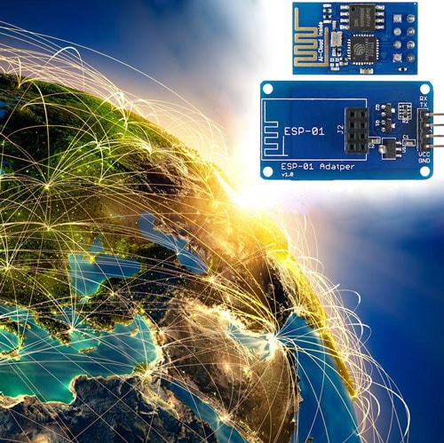
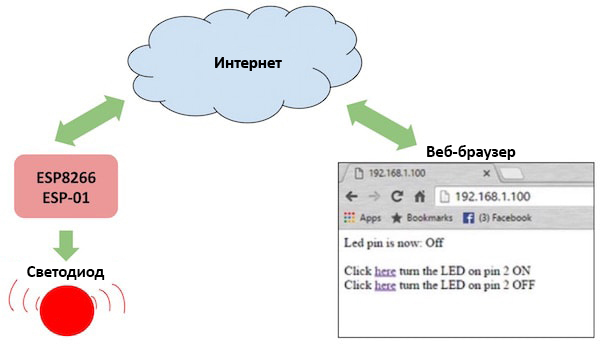
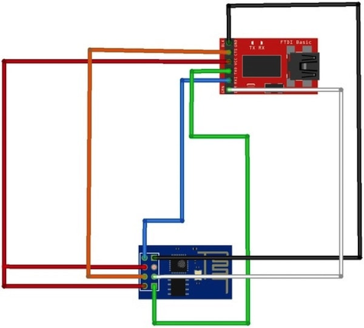
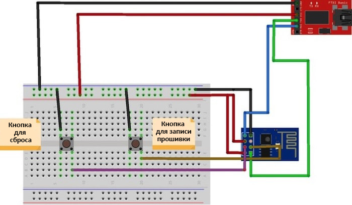
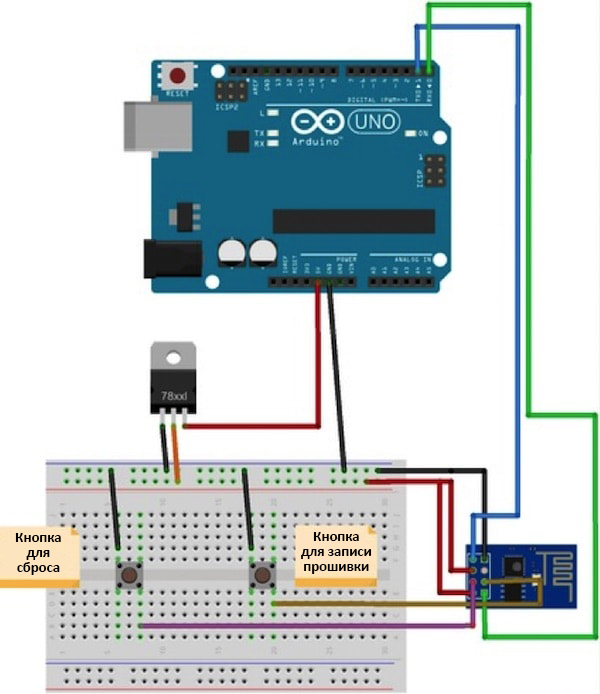
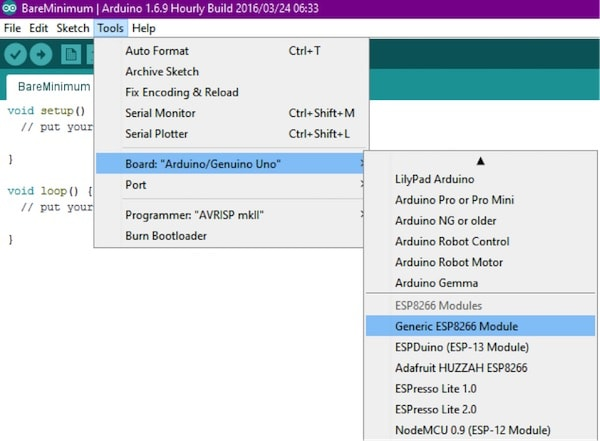
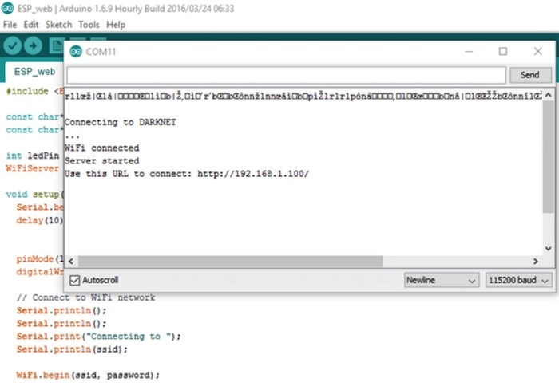
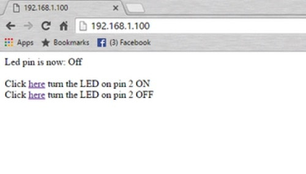
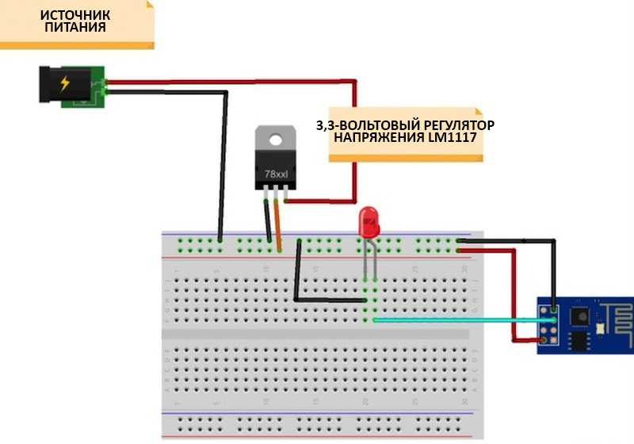

Перевод: Максим Кузьмин
Проверка/Оформление/Редактирование: Мякишев Е.А.
|
Черновик |
Гайд по ESP8266: Как управлять устройствами через интернет[1]

В этом руководстве мы воспользуемся модулем ESP-01, чтобы показать, как можно управлять светодиодом, отправляя ему данные через интернет. Чип ESP8266 – это очень дешевая, но и очень эффективная платформа для коммуникации через глобальную сеть. Кроме того, он имеет отличную совместимость с платформой Arduino.
Для программирования модуля ESP8266 ESP-01 потребуется конвертер USB-TTL. Кроме того, нам понадобится IDE Arduino, чтобы спрограммировать скетч, который будет веб-сервером, удаленно управляющим светодиодом. Если вы новичок, имеет смысл сначала почитать это руководство, в котором объясняются азы работы с WiFi-модулем ESP-01. Что касается гайда, который вы читаете сейчас, то здесь также объясняется, как настраивать модуль и проверять наличие коммуникации между ESP8266 и другим устройством при помощи конвертера USB-TTL.
Чипом ESP8266 можно управлять из локальной WiFi-сети или через интернет (после переадресации портов). У модуля ESP-01 есть GPIO-контакты, которые можно запрограммировать на включение/выключение светодиода или реле. Модуль можно запрограммировать при помощи конвертера USB-TTL через контакты для последовательной коммуникации (RX и TX).

Подключение ESP8266 к программирующему устройству
Для программирования ESP8266 можно использовать не только конвертер USB-TTL, но и плату Arduino. Ниже представлено 3 способа, при помощи которых можно программировать ESP8266 – выберите тот, что подходит вам лучше всего. Для каждого из способов имеется картинка, показывающая, каким образом устройства нужно подключать друг к другу.
При помощи конвертера USB-TTL с контактом DTR
Если вы используете конвертер USB-TTL с контактом DTR, то загрузка прошивки должна пройти безо всяких проблем. Но имейте в виду, что монитор порта в этом случае работать не будет.

Схема подключения контактов показана в таблице ниже:
|
Конвертер USB-TTL |
Модуль ESP8266 ESP-01 | |
|
GND |
<---> |
GND |
|
TX |
<---> |
RX |
|
RX |
<---> |
TX |
|
RTS |
<---> |
RST |
|
DTR |
<---> |
GPIO0 |
При помощи конвертера USB-TTL без контакта DTR
При использовании конвертера USB-TTL без контакта DTR инициализировать запись прошивки придется вручную. Для этого понадобится две кнопки (см. картинку ниже).

|
Конвертер USB-TTL |
Модуль ESP8266 ESP-01 | |
|
GND |
<---> |
GND |
|
TX |
<---> |
RX |
|
RX |
<---> |
TX |
|
Кнопка сброса |
<---> |
RST |
|
Кнопка для записи прошивки |
<---> |
GPIO0 |
Сначала чип нужно переключить в режим загрузки прошивки. Для этого нажмите на кнопку, которая на картинке изображена как «кнопка для записи прошивки». Держите ее нажатой, а затем один раз нажмите на кнопку, изображенную как «кнопка для сброса». Теперь кнопку для записи прошивки можно отпустить – чип ESP8266 переключен в режим записи прошивки! То есть теперь вы можете загружать на него свой скетч.
Для записи прошивки на чип ESP8266 можно также воспользоваться платой Arduino (в данном случае – модели Uno). Чтобы переключить чип в режим записи прошивки, следуйте той же процедуре, что и в разделе выше – зажмите кнопку для записи прошивки, один раз нажмите на кнопку для сброса, а затем отпустите кнопку для записи прошивки.

|
Arduino |
Модуль ESP8266 ESP-01 | |
|
GND |
<---> |
GND |
|
TX |
<---> |
TX |
|
RX |
<---> |
RX |
|
Кнопка сброса |
<---> |
RST |
|
Кнопка для записи прошивки |
<---> |
GPIO0 |
Подключив ESP8266 к программирующему устройству одним из способов, описанных выше, откройте IDE Arduino и кликните по Инструменты > Плата > Generic ESP8266 Module (Tools > Board > Generic ESP8266 Module).
Примечание
Если вы еще не установили в IDE Arduino ядро для чипа ESP8266, то о том, как это сделать, написано в этом руководстве (в разделе «Installing the ESP8266 Platform», что переводится как «Установка ядра ESP8266»). Установив ядро, вернитесь сюда.

Теперь скопируйте в IDE Arduino код ниже и нажмите на кнопку «Загрузка». Поменяйте в коде надпись YOUR_SSID на SSID вашей точки доступа WiFi, а также надпись YOUR_PASSWORD на пароль, который вы используете для своей точки доступа. Затем скомпилируйте скетч.
#include <ESP8266WiFi.h>
const char* ssid = "YOUR_SSID"; // для SSID точки доступа
const char* password = "YOUR_PASSWORD"; // для пароля к точке доступа
int ledPin = 2; // контакт GPIO2 на ESP8266
WiFiServer server(80); // порт веб-сервера
void setup() {
Serial.begin(115200);
delay(10);
pinMode(ledPin, OUTPUT);
digitalWrite(ledPin, LOW);
// подключаемся к WiFi-сети:
Serial.println();
Serial.println();
Serial.print("Connecting to "); // "Подключение к "
Serial.println(ssid);
WiFi.begin(ssid, password);
while (WiFi.status() != WL_CONNECTED) {
delay(500);
Serial.print(".");
}
Serial.println("");
Serial.println("WiFi connected");"); // "Подключение к WiFi
// выполнено"
// запускаем сервер:
server.begin();
Serial.println("Server started"); // "Сервер запущен"
// печатаем IP-адрес:
Serial.print("Use this URL to connect: "); // "Используем этот URL
// для подключения: "
Serial.print("http://");
Serial.print(WiFi.localIP());
Serial.println("/");
}
void loop() {
// проверяем, подключен ли клиент:
WiFiClient client = server.available();
if (!client) {
return;
}
// ждем, когда клиент отправит какие-нибудь данные:
Serial.println("new client"); // "новый клиент"
while(!client.available()){
delay(1);
}
// считываем первую строчку запроса:
String request = client.readStringUntil('\r');
Serial.println(request);
client.flush();
// обрабатываем запрос:
int value = LOW;
if (request.indexOf("/LED=ON") != -1) {
digitalWrite(ledPin, HIGH);
value = HIGH;
}
if (request.indexOf("/LED=OFF") != -1){
digitalWrite(ledPin, LOW);
value = LOW;
}
// выставляем значение на ledPin в соответствии с запросом:
//digitalWrite(ledPin, value);
// возвращаем ответ:
client.println("HTTP/1.1 200 OK");
client.println("Content-Type: text/html"); // "Тип контента:
// text/html "
client.println(""); // не забываем это...
client.println("<!DOCTYPE HTML>");
client.println("<html>");
client.print("Led pin is now: "); // "Контакт светодиода теперь
// в состоянии: "
if(value == HIGH) {
client.print("On"); // "Вкл"
} else {
client.print("Off"); // "Выкл"
}
client.println("<br><br>");
client.println("Click <a href=\"/LED=ON\">here</a> turn the LED on pin 2 ON<br>"); // "Кликните тут, чтобы включить светодиод
// на контакте 2"
client.println("Click <a href=\"/LED=OFF\">here turn the LED on pin 2 OFF<br>"); // "Кликните тут, чтобы выключить светодиод
// на контакте 2"
client.println("</html>");
delay(1);
Serial.println("Client disconnected"); // "Клиент отключен"
Serial.println("");
}
Далее откройте монитор порта, а затем через веб-браузер откройте URL, показанный в мониторе порта. Подключите контакт GPIO2 на ESP8266 к длинной ножке (аноду) светодиода. Теперь вы можете управлять этим светодиодом через интернет!

Теперь кликайте по ссылкам в браузере, чтобы включить или выключить светодиод.

Уберите все провода, которые использовались для загрузки прошивки. Затем подключите LM1117 – это регулятор напряжения, выдающий 3,3 вольта. Это позволит модулю ESP8266 ESP-01 работать в автономном режиме.

Подключение ESP8266 к интернету
В таком виде модулем ESP8266 можно управлять только из локальной WiFi-сети. Чтобы им можно пользоваться для управления устройствами через интернет, на роутере нужно выполнить переадресацию портов.
Для этого найдите IP-адрес вашей системы, вписав в терминале команду ifconfig или зайдя на сайт http://www.whatsmyip.org/. Скопируйте свой IP-адрес. Теперь откройте настройки роутера и перейдите к настройкам переадресации. Введите данные в поля для служебного порта и IP-адреса. Служебный порт – это порт, указанный в коде Arduino (80).
WiFiServer server(80); // порт веб-сервера
IP-адрес – это адрес, найденный вами в абзаце выше. Остальные настройки оставьте по умолчанию. Теперь перейдите в браузер и введите в адресной строке следующий адрес: xxx.xxx.xx.xx:80. В результате должна открыться страница для управления светодиодом. Более подробно о переадресации портов читайте здесь.
�